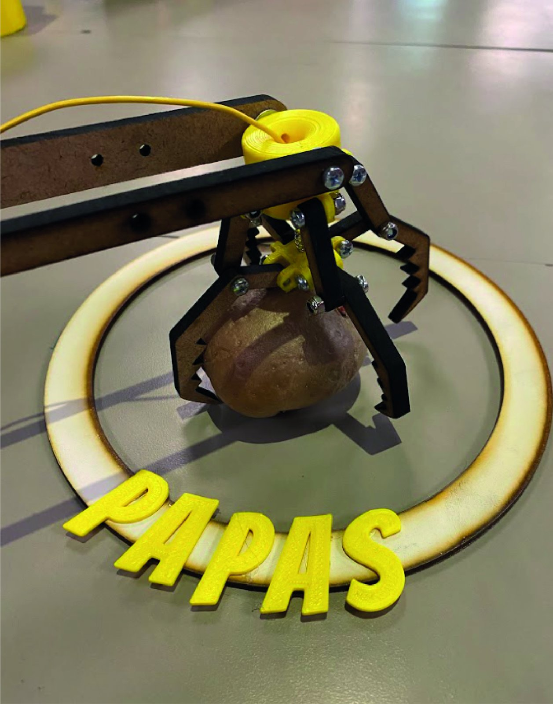
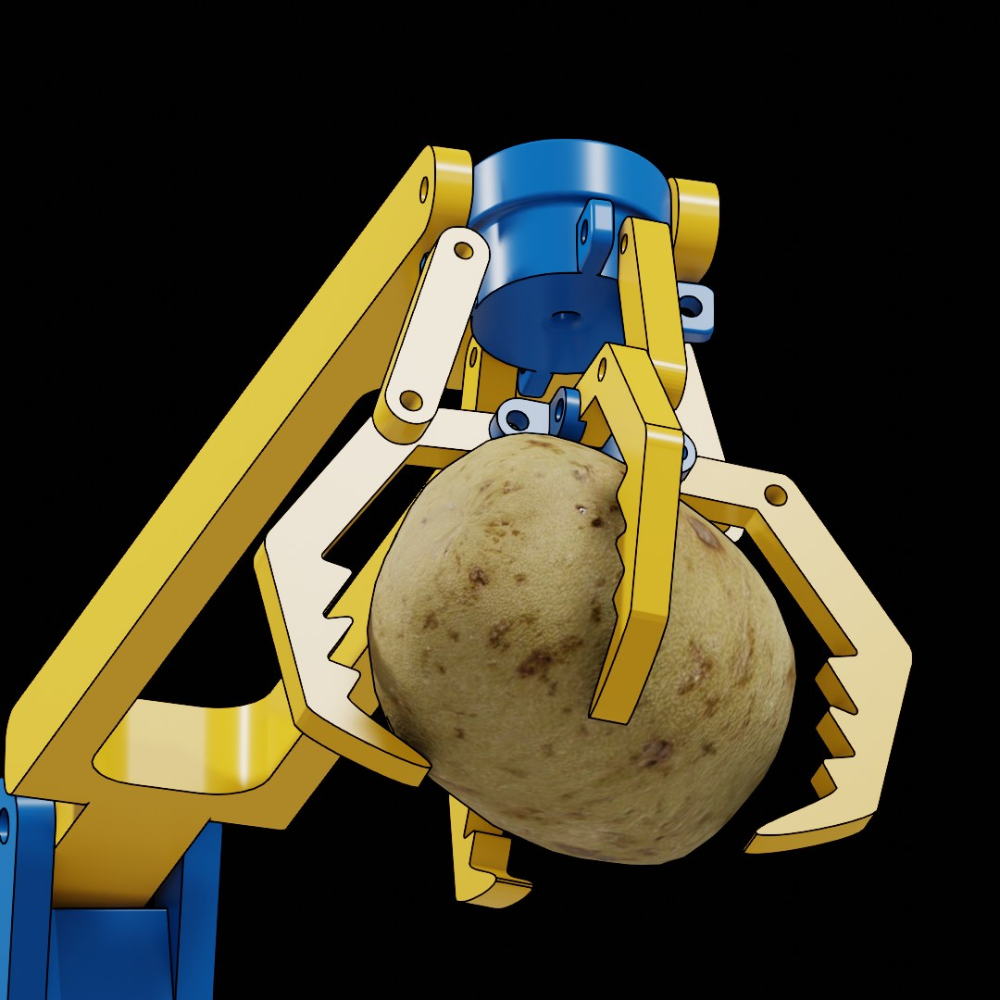
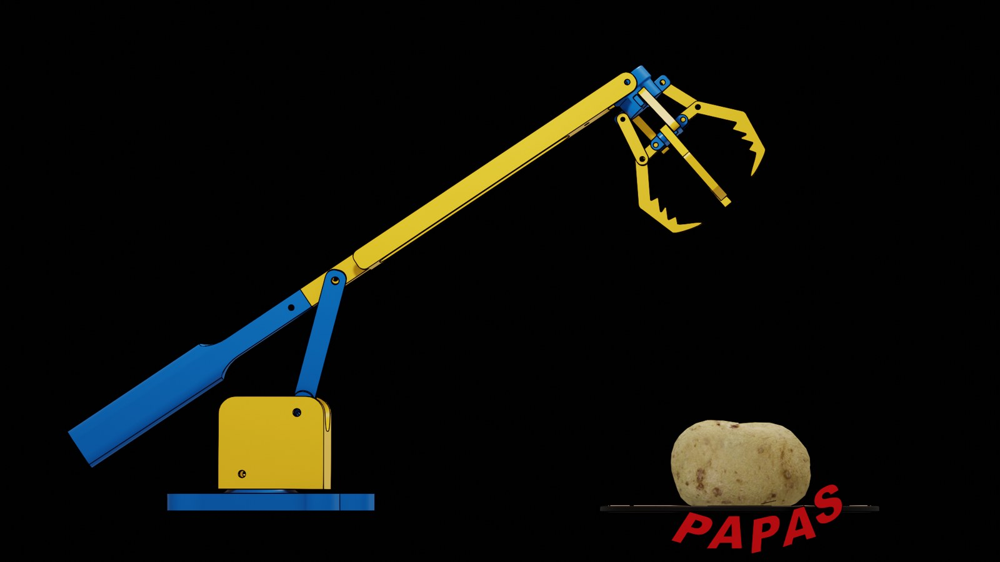
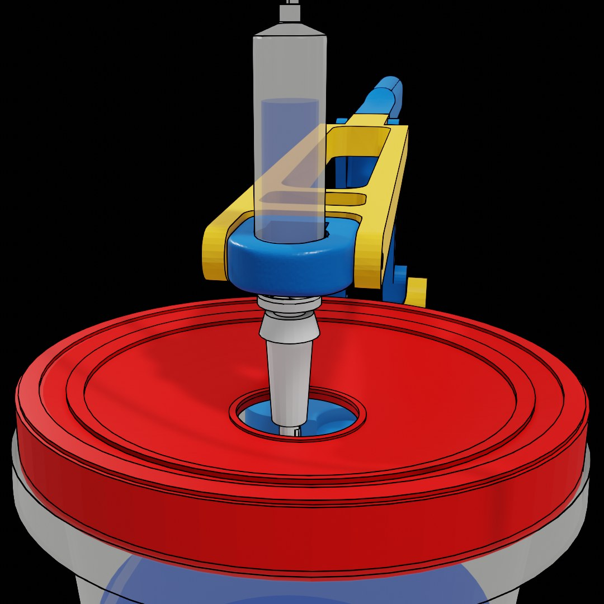
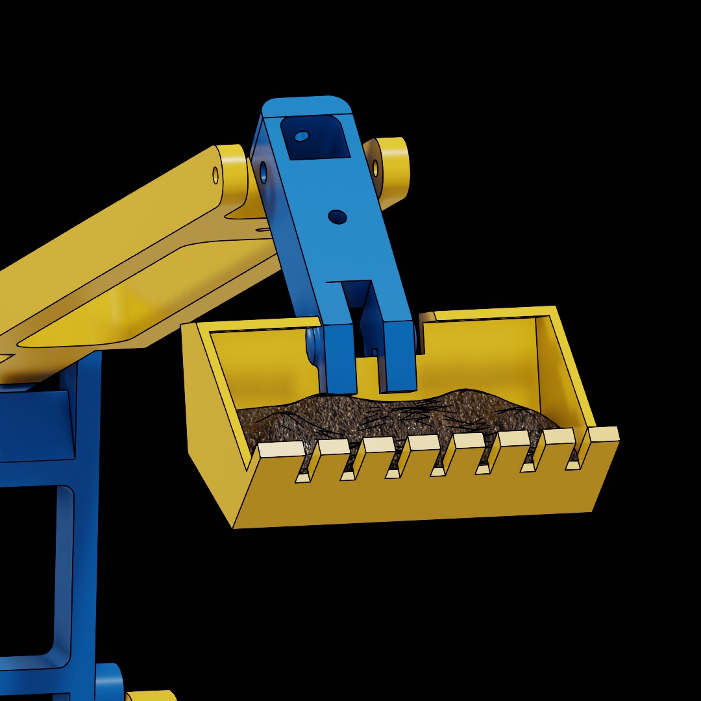
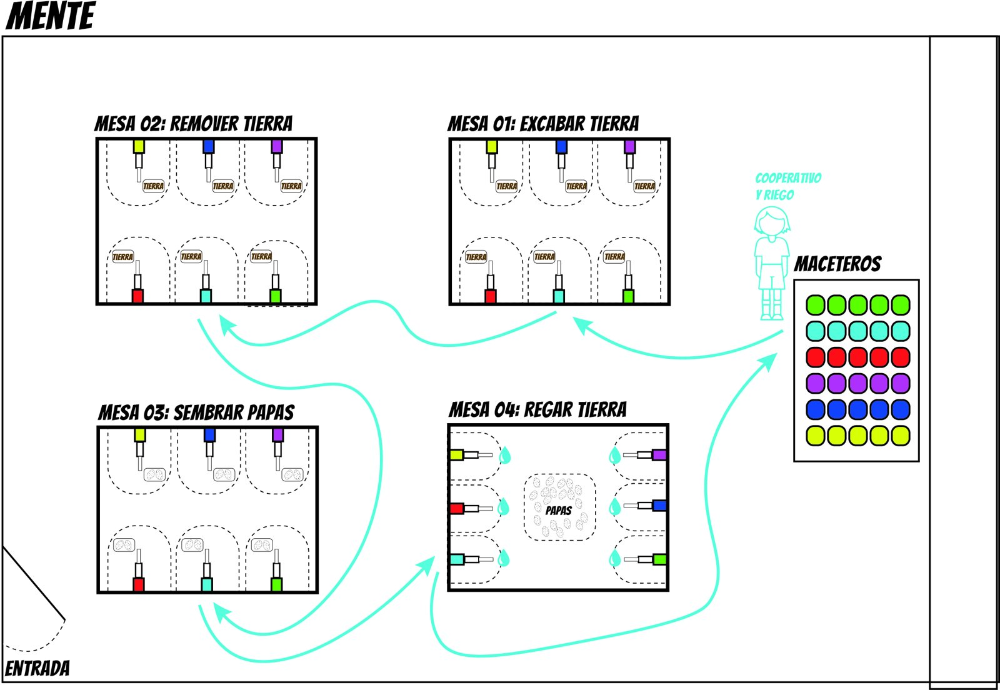
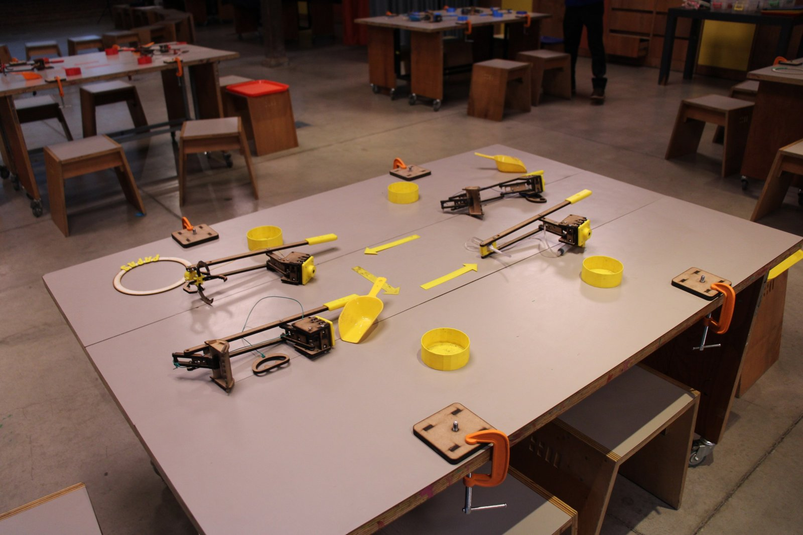
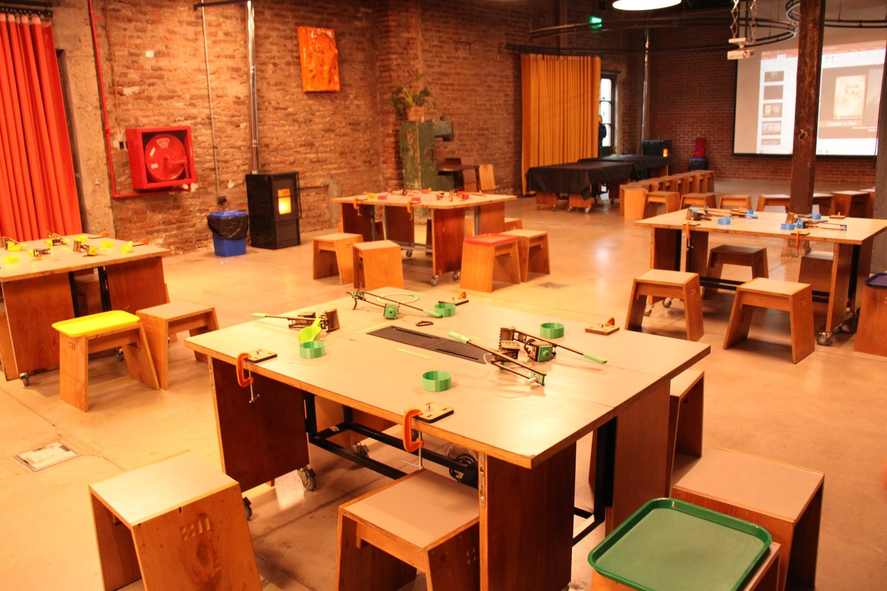
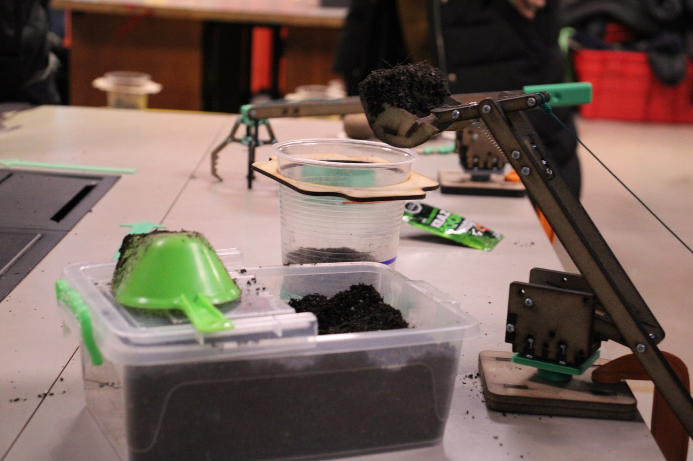
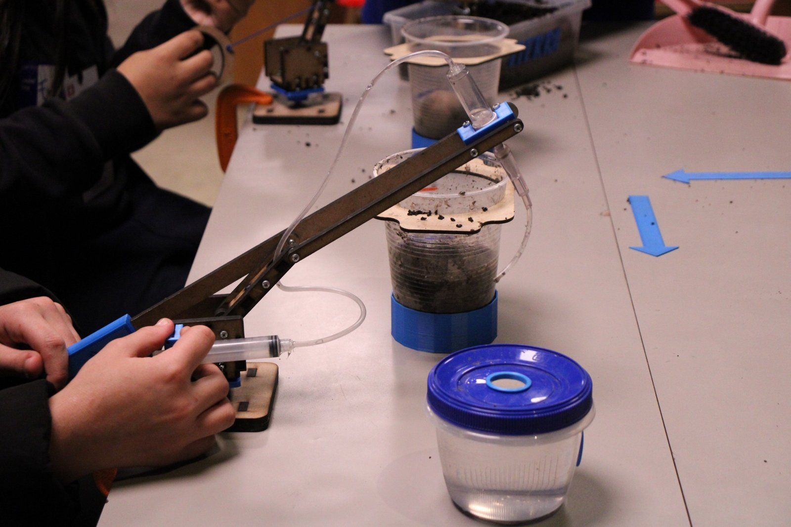

Tecno-cultivo
Una experiencia sobre cultivo y tecnología para KAOS, de Fundación Mustakis, construida alrededor de un brazo con tres herramientas intercambiables.

Tecno-cultivo es una experiencia educativa sobre cultivo y tecnología que Ideo Maker desarrolló para KAOS, el espacio creativo de la Fundación Mustakis. Los participantes recorren cuatro mesas y en cada una hacen una tarea del cultivo de la papa con un brazo mecánico: excavar la tierra, removerla, sembrar y regar.
Mi rol
- Diseño de la experiencia inicial, junto a Elvis Andrade
- Diseño de la garra robótica
- Fabricación con impresión 3D y corte láser
- Ayudante en algunos talleres
Equipo Ideo Maker
- Vicente Cáceres
- Elvis Andrade
- Patricia Ramírez
- Sebastián Higuera
- Javiera Matus
{kind=link}

Un brazo, tres herramientas
El centro de la experiencia es un solo brazo al que se le cambia la herramienta según la tarea: una pala para la tierra, una garra para tomar y sembrar las papas, y un gotero para regar. La garra es la pieza mecánicamente más compleja del conjunto.
{kind=link}

{kind=link}

{kind=link}

{kind=link}

La experiencia
La referencia fue Overcooked, el videojuego en que un equipo cocina repartiéndose estaciones. Aquí las estaciones son las cuatro mesas del cultivo. Cada mesa tiene seis brazos, uno de cada color, y al final del recorrido están los maceteros, ordenados por los mismos colores.
{kind=link}

{kind=link}

{kind=link}

{kind=link}

{kind=link}

Cómo fue cambiando
El primer diseño lo hicimos con Elvis Andrade. Después lo mejoraron Patricia Ramírez y Sebastián Higuera, y se siguió afinando en los propios talleres, que dictaron Patricia Ramírez y Javiera Matus. Yo estuve como ayudante en algunos de ellos.